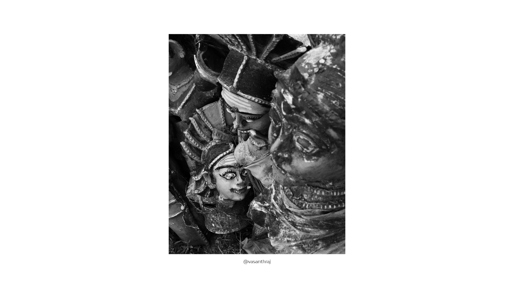
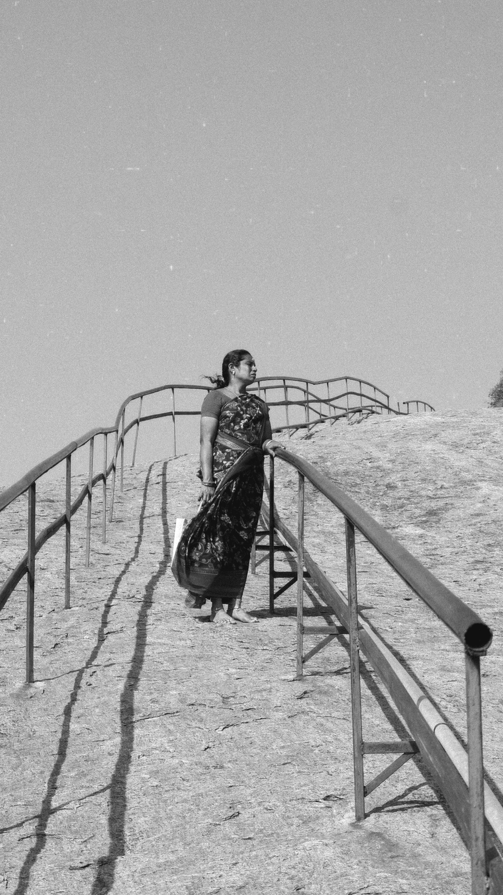
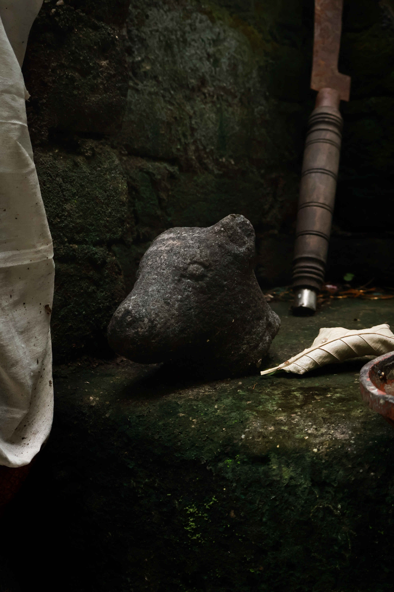
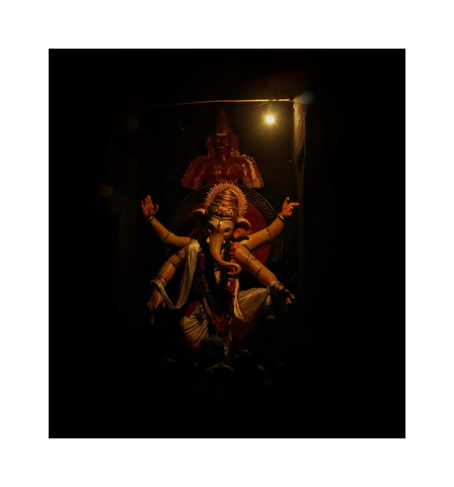
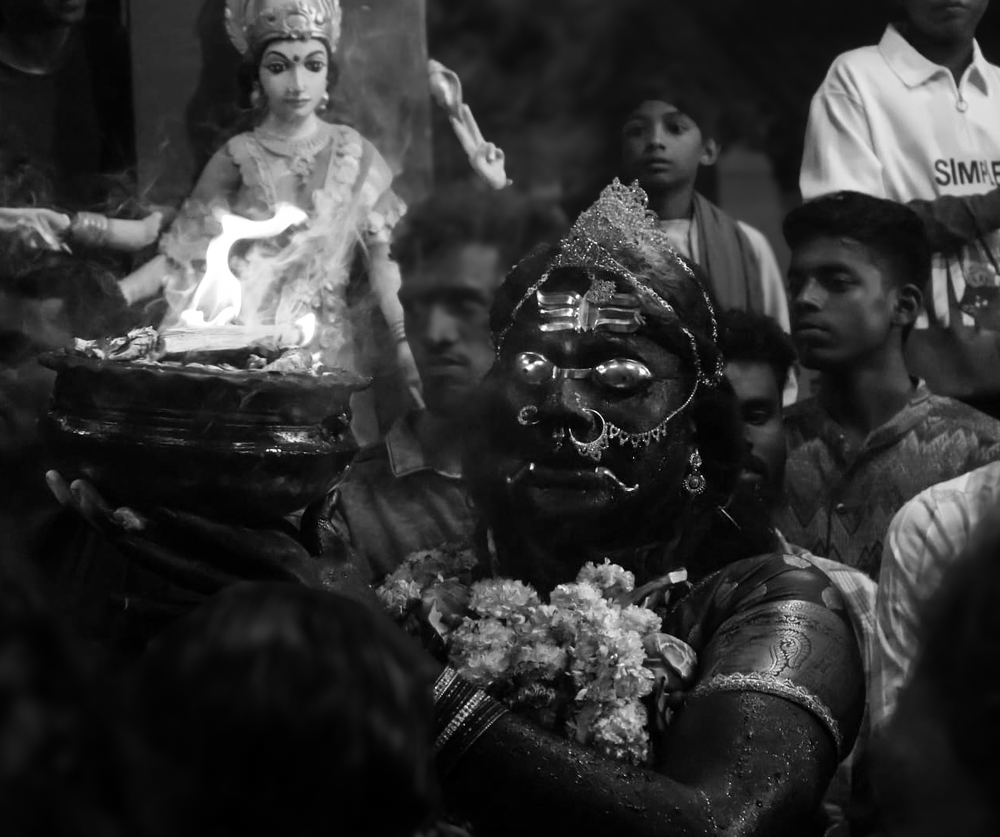
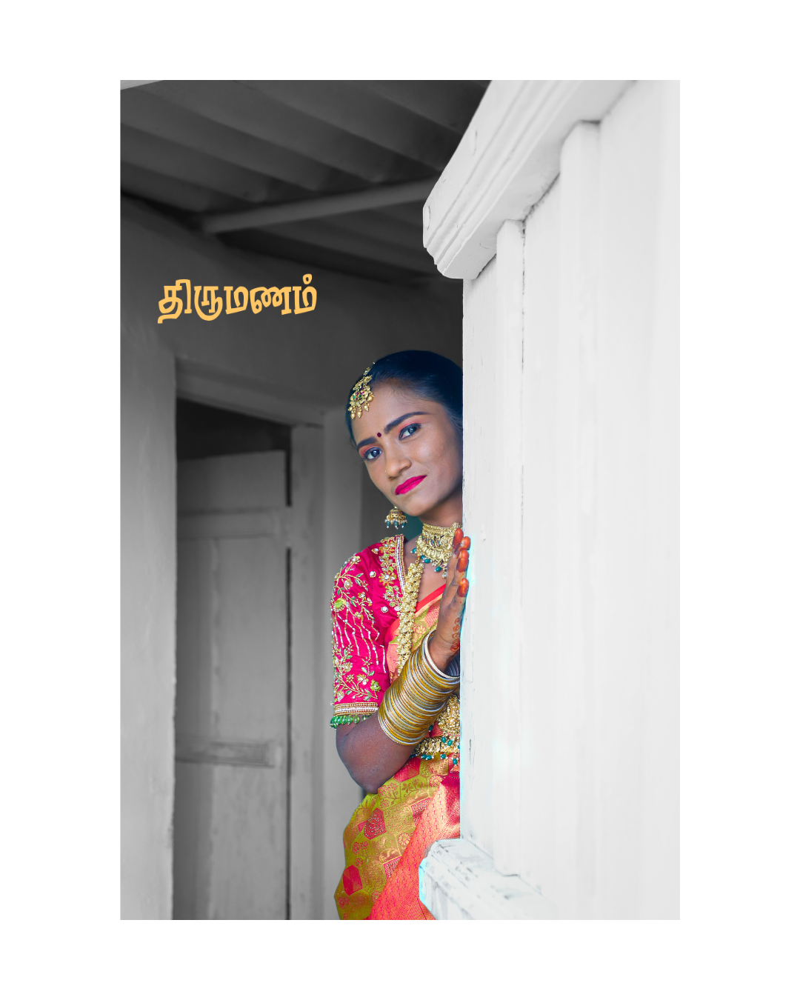

(1).jpg)
.jpg)


About
I am Vasantha Kumar — a documentary photographer and visual storyteller from Virudhunagar, Tamil Nadu, documenting the soul of India one frame at a time.
My work lives in culture, festivals, and street life. I hold an M.Sc in Visual Communication from The American College, Madurai (2026) and currently work as a Student Reporter at Ananda Vikatan. I've interned with Studio A by Amar Ramesh and REC.709 Films.
Long-term projects: Mask (2-year documentary) and Kannagi Chilambu (ongoing). Solo travels across Tamil Nadu, Kerala, Mumbai, Punjab, Delhi & Jammu-Kashmir.
I don't just take photographs — I tell stories that stay.
Photography

A black and white close-up of carved deity heads stacked in a workshop — mystic, weathered, and waiting to be worshipped.
Sacred Statues

A man stands atop vast cylindrical hay bales, holding a white rope against an open sky — solitude and strength in the rural landscape.
Above the Fields

A woman in a saree stands on a rocky incline, gazing into the distance — a quiet moment of journey and solitude on a pilgrim's path.
The Pilgrim

A weathered deity statue, painted in yellow and blue, lies half-swallowed by green vines — abandoned holiness reclaimed by nature.
Forgotten Deity

A small stone Nandi rests on a mossy ledge alongside a rusted tool and a dry leaf — time layered over faith, quietly decaying.
Nandi & Rust

A multi-armed Ganesha idol dramatically lit by a single overhead bulb — deep shadows and reverence merge in a mystical glow.
Illuminated Ganesh
A group wades waist-deep in the sea around a wooden altar — a serene black and white witness to ancient ritual at the water's edge.
Sea Ritual
The Journal
A curated archive of field expeditions, cultural encounters, and visual narratives — each chapter a window into a world witnessed through the lens.



